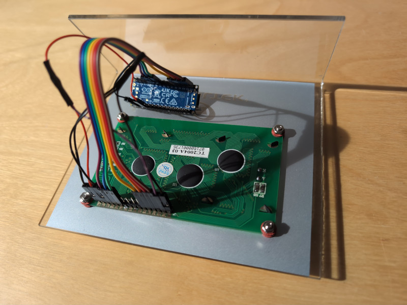

LCD Controller Program Update
Around 18 years ago I made a program to control a "Cooltek" LCD display over the parallel port from a PC. Since parallel ports are hard to come by these days I had to make an update. I happened to have a Arduino Nano R4 lying around so I decided to use that one. Many of the Arduinos, including the Nano R4, uses 5V GPIO levels which makes things simpler since no level shifters are needed to interface with this LCD panel.
Here is the sketch I created:
#include <hd44780.h>
#include <hd44780ioClass/hd44780_pinIO.h>
const int LCD_RS = D2;
const int LCD_RW = D3;
const int LCD_EN = D4;
const int LCD_DB0 = D5; /* Not used. */
const int LCD_DB1 = D6; /* Not used. */
const int LCD_DB2 = D7; /* Not used. */
const int LCD_DB3 = D8; /* Not used. */
const int LCD_DB4 = D9;
const int LCD_DB5 = D10;
const int LCD_DB6 = D11;
const int LCD_DB7 = D12;
const int LCD_COLS = 20;
const int LCD_ROWS = 4;
const int BAUDRATE = 115200;
hd44780_pinIO lcd(LCD_RS, LCD_EN, LCD_DB4, LCD_DB5, LCD_DB6, LCD_DB7);
const uint8_t blank[8] = {0x00,0x00,0x00,0x00,0x00,0x00,0x00,0x00};
void setup()
{
int i;
Serial.begin(BAUDRATE);
/* Set R/W low to force write mode always: */
pinMode(LCD_RW, OUTPUT);
digitalWrite(LCD_RW, LOW);
lcd.begin(LCD_COLS, LCD_ROWS);
lcd.cursor();
/* Set line wrap and clear display to write rows in correct order: */
lcd.lineWrap();
lcd.clear();
/* Clear garbage data for custom characters and replace with blank: */
for (i = 0; i < 8; i++) {
lcd.createChar(i, blank);
}
}
void loop()
{
static bool escape = false;
static int escape_dca = 0;
static int escape_row = 0;
static int escape_col = 0;
char c;
while (Serial.available() > 0) {
c = Serial.read();
/* Escape codes: */
if (escape_dca == 2) {
escape_row = c - 0x20;
escape_dca--;
continue;
} else if (escape_dca == 1) {
escape_col = c - 0x20;
escape_dca--;
lcd.setCursor(escape_col, escape_row);
continue;
} else if (escape == true) {
switch (c) {
case 'H':
lcd.home();
break;
case 'J':
lcd.clear();
break;
case 'L':
lcd.scrollDisplayLeft();
break;
case 'l':
lcd.moveCursorLeft();
break;
case 'R':
lcd.scrollDisplayRight();
break;
case 'r':
lcd.moveCursorRight();
break;
case 'C':
lcd.cursor();
break;
case 'c':
lcd.noCursor();
break;
case 'B':
lcd.blink();
break;
case 'b':
lcd.noBlink();
break;
case 'A':
lcd.autoscroll();
break;
case 'a':
lcd.noAutoscroll();
break;
case 'W':
lcd.lineWrap();
break;
case 'w':
lcd.noLineWrap();
break;
case 'Y':
escape_dca = 2;
break;
default:
break;
}
escape = false;
continue;
}
/* Check for escape: */
if (c == 0x1B) {
escape = true;
continue;
}
/* Write all other characters: */
lcd.write(c);
}
delay(100);
}
It was based on the Serial2LCD example and uses the hd44780 library, but adapted heavily. To be able to control most LCD settings remotely I added support for some Escape codes very loosely inspired by the DEC VT52 set.
Here is a Makefile for convenience, to be placed in the same directory as the ".ino" sketch file:
.PHONY: compile
compile:
cd .. && arduino-cli compile -b arduino:renesas_uno:nanor4 cooltek
.PHONY: upload
upload:
cd .. && arduino-cli upload -b arduino:renesas_uno:nanor4 cooltek
The connections are as follows:
|-----|---------|---------|
| LCD | LCD Pin | Nano R4 |
|-----|---------|---------|
| VSS | 1 | GND |
| VDD | 2 | +5V |
| V0 | 3 | GND |
| RS | 4 | D2 |
| R/W | 5 | D3 |
| E | 6 | D4 |
| DB4 | 11 | D9 |
| DB5 | 12 | D10 |
| DB6 | 13 | D11 |
| DB7 | 14 | D12 |
| A | 15 | +5V |
| K | 16 | GND |
|-----|---------|---------|
Here is a photo of the contraption:
